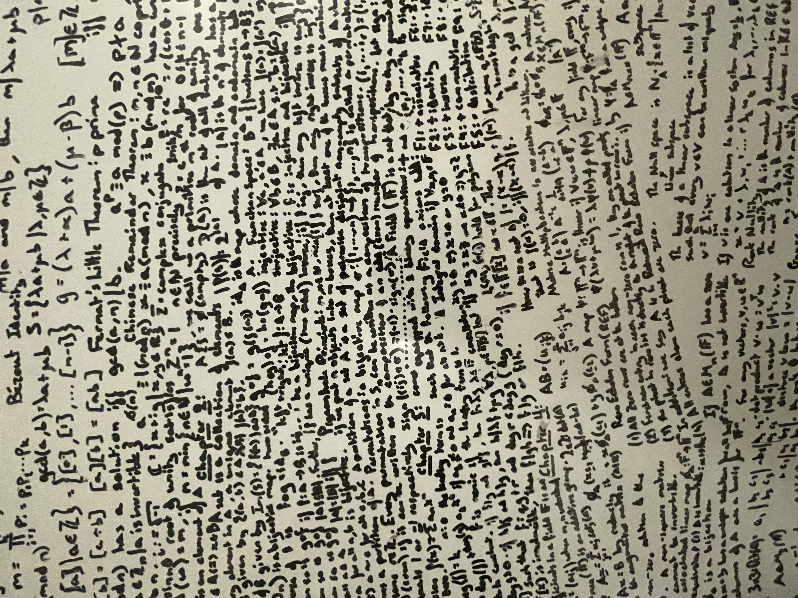
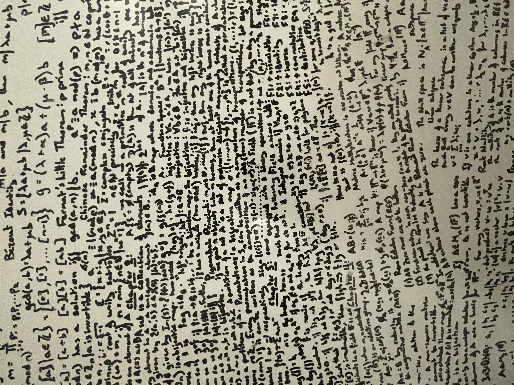
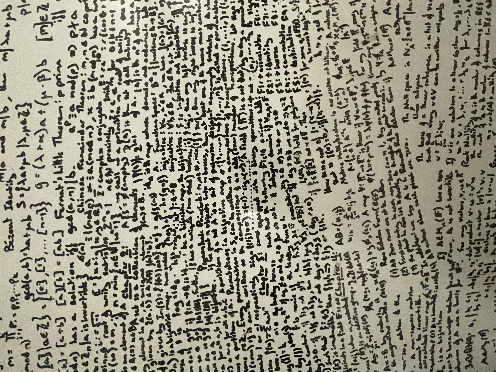

Interests outside of the project.
Outside of my professional career, these
 



Welcome to my Portfolio! Whilst I am not well-studied in front-end development, I wanted to create a page that demonstrated my tenacity for learning and a place to showcase the projects I have worked on.
This site is a constant work in progress as I learn more about programming, JS especially, and incorporate things that I find cool into this page.
Don't hesitate to contact me using the email se612@bath.ac.uk or +44 07455 286322 for any queries or points of advice. Cheers.
Here are a few projects I am particularly proud of, in a range of languages, all built to fill a need in my workflow or an idea that I thought would be a fun opportunity to learn a new skill.
Numerical Analysis coursework
#Python
The Portfolio page has been created from the ground up following online courses and inspiration taken from YouTube videos.
#HTML #CSS #Javascript
As part of my Functional Programming module, we studied the process of beta reduction and alpha conversion. This machine provides the code and examples that given any abstraction can reduce any redex as well as the inclusions of integers. This coursework project achieved an 86% in Year 2.
#Haskell
#Excel
Inspired by The Athletic
#SQL #Python
Outside of my professional career, these
